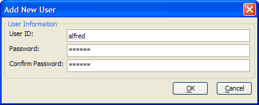
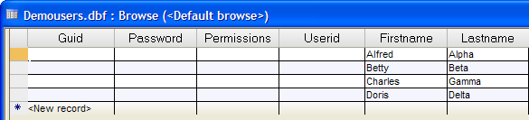
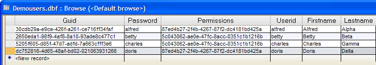

Adding Users from the Desktop
All users who login to your web application have to be first registered in the user table. If you have fields other than UserID in the Enter / Edit Web Users dialog, you must first add them to the user table ("mytable") with a conventional desktop form or browse.

Display the Tables/Sets tab of the Control Panel.
Select "demousers", right click, and select Open Default Form.
Enter new records with these values in the Firstname and Lastname fields. Ignore the other fields for the moment.
Save your records and close the form. This picture of the demousers default browse shows the data entered so far.
Display the Web Projects Control Panel.
Right click on the right pane of the Control Panel (which lists your pages and components) and select Security > Web Users to display the Enter / Edit Web Users? dialog.
Select each of the entries in the List of Registered Users :
Enter following UserID.
Enter the following Password.
Click Permissions and place a check next to the appropriate group. If the group does not yet exist, click New Group, enter its name, and click OK.
Click Save Record and Close when you are finished. This picture of the demousers default browse shows fully populated records. Remember the guid and permissions fields are encoded, so you will not have the same values.
|
Firstname |
Lastname |
|
Alfred |
Alpha |
|
Betty |
Beta |
|
Charles |
Gamma |
|
Doris |
Delta |

|
User ID |
Password |
Permissions |
|
alfred |
alfred |
Marketing |
|
betty |
betty |
Accounting |
|
charles |
charles |
Accounting |
|
doris |
doris |
Marketing |

Limitations
Web publishing applications only.
See Also